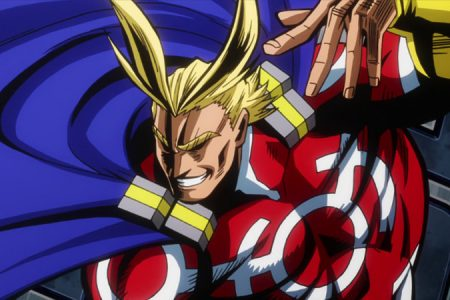

Toshinori Yagi (八や木ぎ俊とし典のり, Yagi Toshinori ?)[2], mejor conocido como All Might (オールマイト, Ōru Maito ?), el "Símbolo de la Paz", es el antiguo héroe número uno y el octavo usuario del Don One For All. También es maestro en la Academia U.A. para héroe. Después de luchar contra All For One, utilizó hasta la última de las brasas sobrantes de One For All por completo, por lo que All Might se retiró de la lucha contra el crimen, y por lo tanto, terminó su era.
